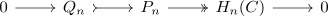
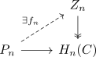
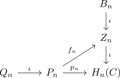
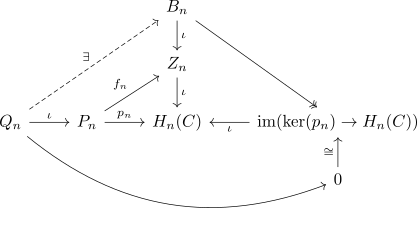
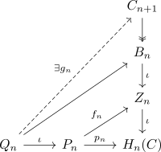
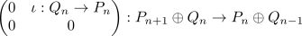
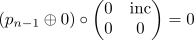

quasi isomorphism to homology for a chain complex over a hereditary ring
Proposition
Let $R$ be a hereditary ring, $\mathrm{RMod}$ the category RMod and $C$ a chain complex in $\mathrm{Ch_*}(\mathrm{RMod})$. Then there exists a chain complex of projectives $P$ and quasi-isomorphisms
where $H(C)$ is the chain complex of homology
Proof
For $n \in \mathbb{N}$ choose an epimorphism
for $P_n$ projective. Then by taking the kernel $Q_n = \mathrm{ker}(p_n)$ this gives a short exact sequence (cf. exactification of a morphism in an abelian category)

(cf. hereditary ring and resolution of length 1)
Note that by projectivity there exists a lift

where $Z_n$ denotes the cycles $Z_n(C)$ with the natural epimorphism $Z_n \twoheadrightarrow H_n(C)$ (cf. epic natural transformation from cycles to homology,
Furthermore we get

Furthermore we get a lifting of $g': Q_n \rightarrow B_n$ by

Then again we can lift

Now consider the chain complex given by derivatives

and the chain maps
chain maps
a)
b)
it follows that
since $\partial_{H(C)} = 0$
and
